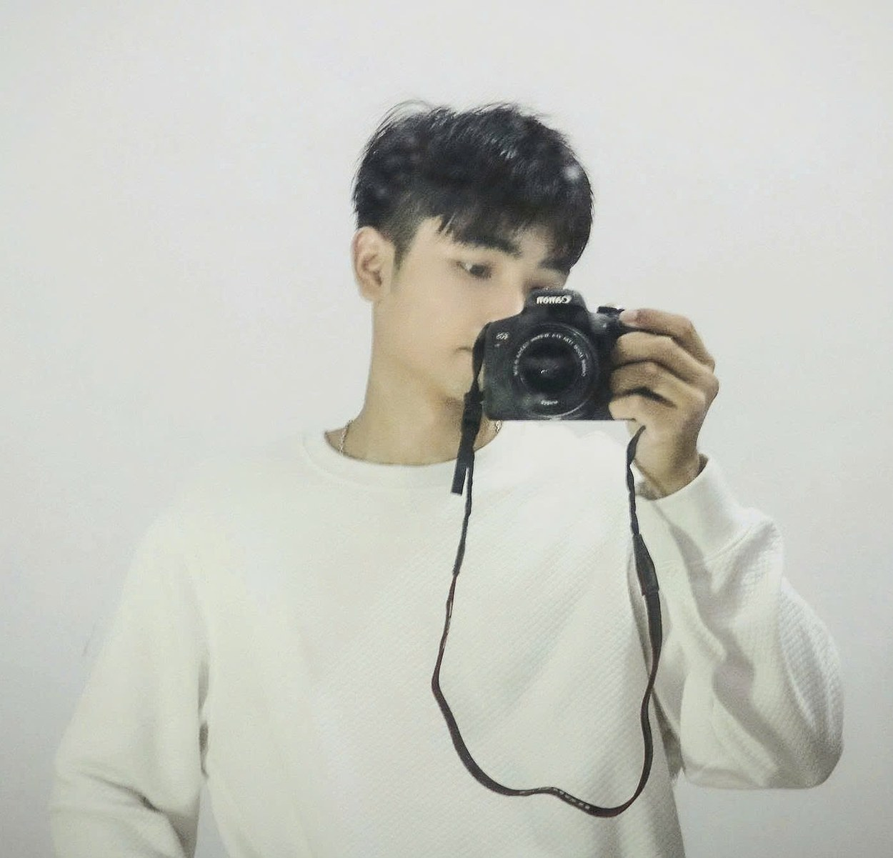
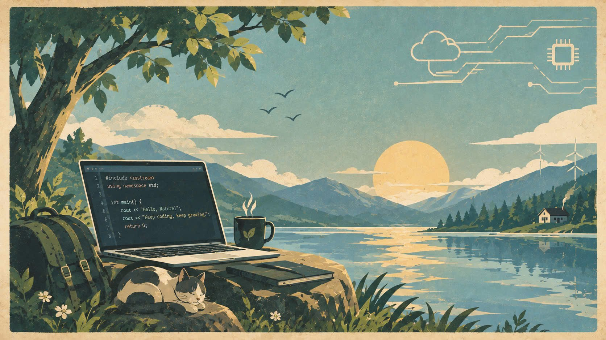
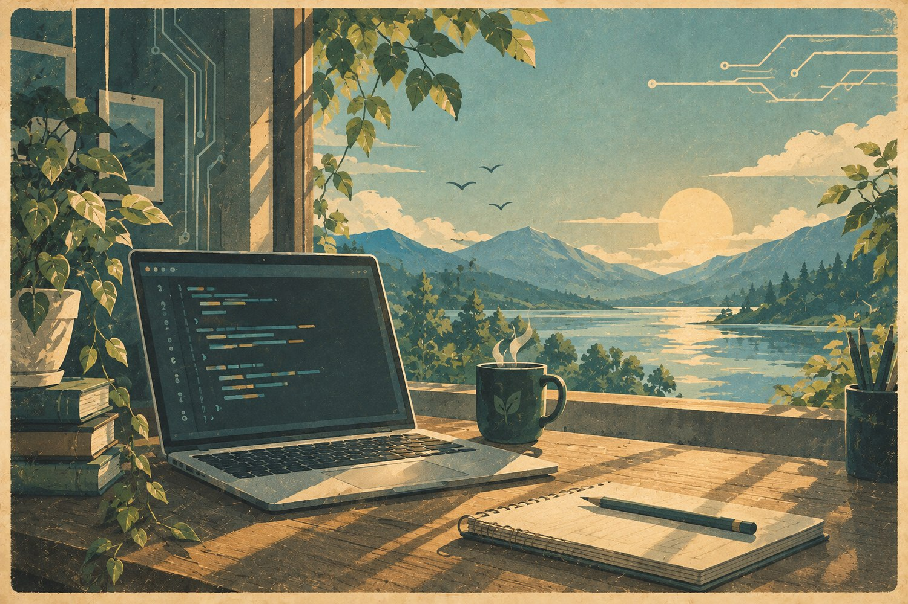

Học tậpĐại học Lạc Hồng
SINH VIÊN CÔNG NGHỆ THÔNG TIN
Xin chào,
mình là Duy Nghĩa.
Mình là Trần Trương Duy Nghĩa, sinh viên ngành Công nghệ thông tin tại Đại học Lạc Hồng. Mình thích khám phá cách công nghệ, thiết kế và thiên nhiên có thể truyền cảm hứng cho những ý tưởng mới.

CHÂN DUNG / 001DUY NGHĨA ✳
MỘT CHÚT CÔNG NGHỆMỘT CHÚT THIÊN NHIÊN

✳ “Keep coding, keep growing.” Một hành trình nhỏ, nhiều điều để khám phá.
01 / GIỚI THIỆU
Đang trên hành trình
trở nên tốt hơn.
Với mình, công nghệ không chỉ là những dòng code — mà còn là cách quan sát, thử nghiệm và giải quyết vấn đề.
Mình đang xây dựng nền tảng về phát triển web, cơ sở dữ liệu và tư duy thiết kế giao diện. Mỗi bài tập là một trang nhật ký: có điều mới học được, có điều cần sửa, và có ý tưởng để làm tốt hơn lần sau.
Định hướngPhát triển Web
Phương châmHọc — Thử — Cải thiện
02 / NĂNG LỰC
Những điều mình
đang vun đắp.
Các kỹ năng dưới đây là những mảng mình đang học và thực hành. Mình ưu tiên nắm vững nền tảng trước khi tiến xa hơn.
01 / WEB
Frontend Development
Xây dựng cấu trúc trang web, trình bày nội dung và tạo trải nghiệm phù hợp với nhiều kích thước màn hình.
02 / DATA
Database & Logic
Làm quen với cách tổ chức dữ liệu, truy vấn thông tin và phân tích bài toán theo từng bước.
03 / IDEAS
Design & Workflow
Quan tâm đến bố cục, khả năng đọc, tính nhất quán và cách cải tiến sản phẩm qua phản hồi.
✳ Danh sách kỹ năng sẽ tiếp tục được cập nhật cùng các dự án thực tế.
03 / DỰ ÁN CHỌN LỌC
Ý tưởng thành hình
qua từng dòng code.
Một vài dự án học tập và hướng thực hành của mình. Mình sẽ bổ sung đường dẫn và kết quả thực tế khi các sản phẩm hoàn thiện hơn.

CASE / 001PERSONAL IDENTITY / WEBPortfolio cá nhân
Website giới thiệu bản thân, kỹ năng và định hướng học tập với HTML5 semantic, CSS Variables, bố cục responsive và hiệu ứng chuyển động nhẹ.
Trao đổi về dự án
CASE / 002STRUCTURED INFORMATION
Quản lý sinh viên
Bài tập cơ sở dữ liệu định hướng tổ chức thông tin sinh viên, môn học và kết quả học tập bằng các truy vấn SQL.
Trao đổi về dự án
CASE / 003TECHNOLOGY × NATURE
Công nghệ & thiên nhiên
Thử nghiệm cách kết hợp hình ảnh minh họa, màu sắc trầm ấm và chủ đề công nghệ để tạo nên một câu chuyện thị giác nhất quán.
Trao đổi về dự ánLưu ý: Các mục trên mô tả dự án học tập và ý tưởng thực hành; hãy cập nhật bằng sản phẩm, ảnh chụp và liên kết thật khi có.
04 / KẾT NỐI
Có ý tưởng hay?
Cùng trò chuyện nhé.
Mình luôn sẵn sàng kết nối để học hỏi, trao đổi ý tưởng hoặc nhận góp ý cho những dự án đang thực hiện.
duynghia12122006@gmail.com